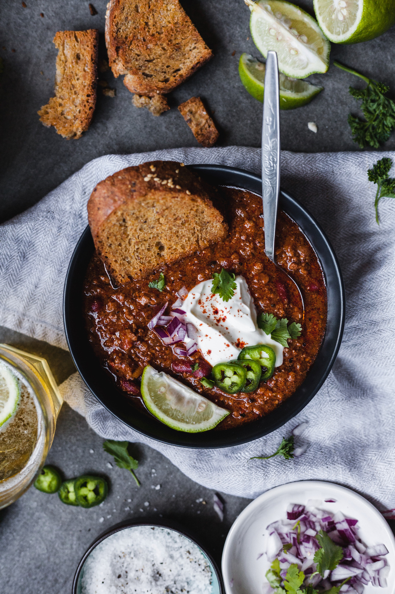

Chili by Kenji

Description
This is the best chili that is easy to make. The recipe comes from Serious Eats
editor J. Kenji Lopez-Alt. It is developed from another chili recipe by Kenji that is
much more complex and uses the freshest and most sophisticated ingredients to make a mouthwatering
chili. However, we are not looking for complexity right now as we want to make an easy chili that is
nearly as delicious.That is why this chili recipe is so good.
Ingredients
- 4 tbsp unsalted butter
- 2 medium onions
- 2 large cloves garlic
- 1 tsp dried oregano
- kosher salt
- 2 chipotle chiles packed in adobo
- 1 anchovy fillets
- 1/2 cup chile paste
- 1 tsp ground cumin
- 1/2 cup tomato paste
- 1 lbs ground chuck
- 1 28oz can whole tomatoes
- 1 15oz can red kidney beans
- 1 cup low-sodium chicken stock
- 2-3 tbsp instant cornmeal
- 2 tbsp whiskey
- freshly ground black pepper
- garnishes as desired
Steps
- Melt the butter in a large Dutch oven over medium-high head. Add the onion,
garlic, oregano, and a pinch of salt and cook, stirring frequently until the onions
are light golden brown, about 5 minutes. Add the chipotles, anchovies, chile paste,
and cumin and cook, stirring, until aromatic, about 1 minute. Add the tomato paste and
cook, stirring until homogenous, about 1 minute.
- Add the ground beef and cook, using a wooden spoon to break up the beef into pieces
and stirring frequently, until no longer pink (do not try to brown the beef), about
5 minutes. Add the tomatoes, beans, stock, and cornmeal and stir to combine. Bring to
a boil, reduce to a simmer, and cook, sitrring occasionally, until the flavors have
developed and the chili is thickened, about 30 minutes.
- Stir in the whiskey, if using. Serve with some or all of the suggested garnishes,
akong with corn chips or tortillas.